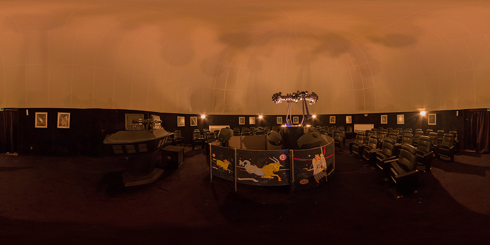

Integrating the Dragão do Mar Art and Culture Center, the Rubens de Azevedo Planetarium it is a technological marvel that strengthens Ceará's tourist-educational activities. The fascinating world of virtual reality gives visitors an incredible view of astros with state-of-the-art projectors. Now equipped with projectors from the German brand Carl Zeiss - Skymaster ZKP 4 LED model - Velvet Duo and PowerDome System, controlled by a set of eight state-of-the-art computers, which make it possible to display images of high quality Full Dome projection (with 180º x 360º projection on the dome), Rubens de Azevedo is the most modern digital planetarium in Latin America.
Fridays
18h - ABC of the Solar System (children's session)
19h - SOUL - and the Invisible Universe (juvenile-adult session)
Saturdays and Mondays
17h - ABC of the Solar System (children's session)
18h - Exploring the Universe (children's session)
19h - SOUL - and the Invisible Universe (juvenile-adult session)
20h - The God Kim and Maya Astronomy (juvenile-adult session)
Tickets for the sessions cost R$ 10.00 for half and R$ 20.00 for full, They can also be purchased through advance purchase on the Sympla Bileto website. (site.bileto.sympla.com.br/dragaodomar), in addition to the physical ticket office at Dragão.


ABC of the Solar System (children's session)

Three kids are stargazing when they notice a "shooting star" and soon one of them makes a wish: the desire to take a trip to the moon. Suddenly, the children are teleported to a spaceship called "Observer". After overcoming their initial fear, they make a rich journey through the Solar System, visiting the planets. During the journey, they pass by Mars and Venus, and even venture inside Saturn's rings. In the end, they make a dangerous approach to the Sun.
SOUL - and the Invisible Universe(juvenile-adult session)
.png)
The session shows the public how scientists discover the existence of objects that are not perceived through the human eye, presenting a powerful astronomical research instrument - the radio telescope. A huge network of such equipment, called ALMA, was installed in the Atacama Desert in Chile. ALMA is made up of 66 high-precision antennas, each with a diameter of 12 meters, which work together as a single giant telescope. It is one of the most advanced astronomical facilities in the world, capable of to observe the universe in millimeter and submillimeter waves, allowing the analysis of cold cosmic objects, such as molecular clouds, forming stars and planets.
Exploring the Universe (children's session)
.jpeg)
With simple language, the session presents fundamentals of Astronomy through a suspenseful story. Galileo's "ghost" appears and takes the audience on a fascinating journey through time and space. The remarks of Galileo started new researches that finally confirmed the ideas of Copernicus and Kepler about the Universe. In addition to historical facts, the session shows current knowledge about the structure of the Universe and our Solar System. A perfect combination of classic planetarium projection and full dome digital imaging.
The God Kim and Maya Astronomy (juvenile-adult session)

With high definition digital projections, the session shows a huge variety of colors and sounds. In Mayan Archaeoastronomy, universe watchers take a journey through six Mayan archaeological sites: San Gervasio, Chichen Itzá, Uxmal, Edzana, Palenque and Bonampak, through which the viewer is immersed in a world of Mayan knowledge about the importance of orientation of its temples in relation to the celestial dynamics of the sun, moon and Venus.
Noite das Estrelas
Todos os meses, sempre nas noites de Quarto Crescente Lunar, o planetário disponibiliza telescópios ao público em geral para observação astronômica de crateras da lua, planetas, nebulosas, etc. A participação é gratuita, por ordem de chegada. A realização do programa fica condicionada às condições de visibilidade, sendo interrompida se o céu estiver nublado. Dia 26 de maio, das 19h às 21h, no Espaço Mix (Rua Dragão do Mar, 81 - Praia de Iracema). Acesso gratuito e livre.
All precautions are reinforced to preserve the health of employees and regulars at the Rubens de Azevedo Planetarium. Due to the increase in the number of cases flu, we recommend that your visitors follow the updated vaccination schedule and preserve the use of mask. Entry after login is not allowed. Entry will only be allowed of children accompanied by adults. It is not allowed to consume food and drink inside the Planetarium.
In addition to the sessions open to the public, the Planetarium Rubens de Azevedo provides schedules for scheduling visits by school groups. With an average duration of 40 minutes, the visit is aimed at groups with a minimum of 20 people and a maximum of 60 people, free of charge for public schools (Tuesdays and Thursdays, 9 am and 10 am, 2 pm and 3 pm) and costing BRL 10.00 per student from private schools (Wednesdays and Fridays, 9:00 am, 10:00 am, 2:00 pm and 3:00 pm). Appointments must be made over the phone. (85) 3488-8639 or through the form https://www.planetariorubensdeazevedo.com.br/agendamento.